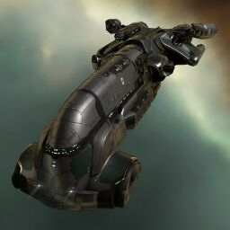

Exequror

Тип корабля: Крейсер
Государство/Организация: Gallente
Примерная стоимость: 10.200.000 ISK
Описание
К 114 году от ю.с. все державы и организации, участвовавшие на тот момент в масштабной, затяжной войне, осознали необходимость обеспечения своих судов функциями поддержки и логистики — в противном случае нескончаемые бои до крайности выматывали участников конфликта. В ходе исследований, в центре которых оказались фрегаты и крейсеры, инженерами Галлентской Федерации, помимо прочего, была существенно переработана конструкция и предназначение «Экзекьюрора». Изначально «Экзекьюрор» был тяжёлым грузовым крейсером, способным отбить атаку фрегата, однако в более серьёзных боевых ситуациях он был бесполезен. В ходе переработки он лишился части своей массы и, соответственно, части силы. Теперь его главное предназначение — помогать другим в пылу сражений, в особенности тем, кому требуется ремонт брони.
Характеристики
Корпус
Запас прочности корпуса: 1.600 ед.
Вместимость грузового отсека: 495 м^3
Объем отсека для дронов: 50 м^3
Пропускная способность канала телеуправления: 50 Мбит/с
Масса: 11.020.000 кг
Занимает объем: 113.000,0 м^3 (10.000,0 м^3 в разобранном виде)
Влияние инертности конструкции: 0,61x
Сопротивление корпуса ЭМ-урону: 33 %
Сопротивление корпуса термальному урону: 33 %
Сопротивление корпуса кинетическому урону: 33 %
Сопротивление корпуса фугасному урону: 33 %
Броня
Запас прочности брони: 1.400 ед.
Сопротивление брони ЭМ-урону: 50 %
Сопротивление брони термальному урону: 35 %
Сопротивление брони кинетическому урону: 35 %
Сопротивление брони фугасному урону: 10 %
Щит
Запас прочности щита: 1.000 ед.
Влияние на время регенерации щитов: 20 минут и 50 секунд
Сопротивление щита ЭМ-урону: 0 %
Сопротивление щита термальному урону: 20 %
Сопротивление щита кинетическому урону: 40 %
Сопротивление щита фугасному урону: 50 %
Сопротивление средствам РЭП
Сопротивление накопителя нейтрализирующему воздействию: 0 %
Сопротивление воздействию генератору стазис-поля: 0 %
Сопротивление воздействию помех на наводку вооружения: 0 %
Накопитель энергии
Емкость накопителя: 1.925,0 ГДж
Время востановления заряда: 6 минут и 25 секунд
Целеуказания
Максимальная дальность захвата цели: 55 км
Максимальное количество захваченных целей: 8
Радиус сигнатуры: 80 м
Разрешающая способность систем захвата цели: 295 мм
Эффективность радарной системы: -
Эффективность магнитнометрической системы: 14 ед.
Эффективность гравиметрической системы: -
Эффективность ладарной системы: -
Двигательная установка
Максимальная скорость: 240 м/с
Скорость в варп-режиме: 4,0 а.е./с.
Служба оснащения
Мощность ЦПУ: 275,0 Тф
Мощность реактора: 610 МВт
Калибровка: 400 ед.
Точки монтажа орудийных установок: 3
Точки монтажа пусковых установок: -
Разъемы большой мощности: 3
Разъемы средней мощности: 4
Разъемы малой мощности: 6
Разъемы под установку тюнинг-модулей: 3